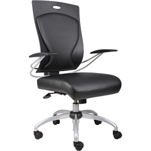
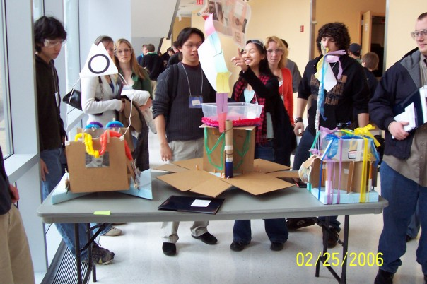
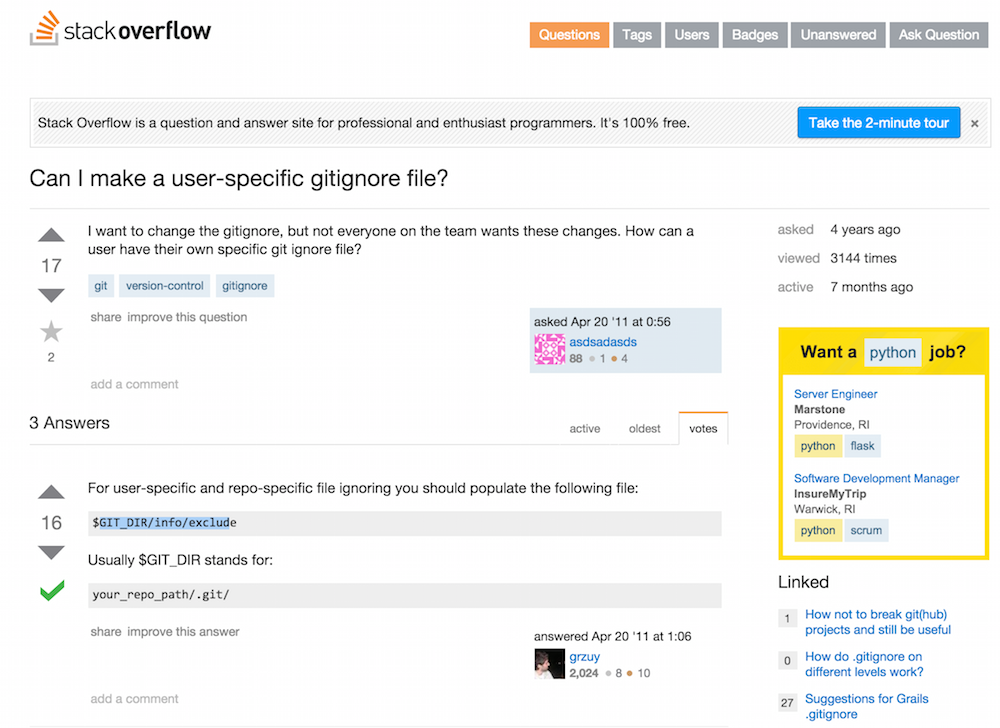

Inspirational Designs
Rolly Chairs (Austin)

Rolly chairs maker it easier for workers in offices to move about, communicate, and collaborate. Moving around in rolly chairs gives users a certain sense of child-like joy. We would similarly like to reduce friction in communication and make our users enjoy it the whole time.
Pin Boards (Austin)
The pin boards are the current formal medium for communicating preferred double and suite preference. By physically placing pins students can make their intents clear and they make the spacial arrangement of rooms readily apparent. The flaws of this system serve as equally if not stronger inspiration. The boards are hosted on the second floor of the CC. This leads to both infrequent updating of the boards and a latency between them being updating and that information being disseminated.
Inbox (Austin)
Inbox is google’s most recent reworking of their email interface. It's goal, like ours is the figure out who you want to talk to and when and then to organize your conversations to make keeping on top of your communications easy. They do this by automagically creating inboxes that organize your emails and then display those by priority. We would like to make a system as effortless and efficient.
C to Python Transition (Austin)
C is a powerful but low level programming that requires programmers to keep track of memory and other values in ways that can be unintuitive. Python is a higher level language that sacrifices speed for easing of writing. Transitioning from writing C to writing Python, everything makes total sense immediately and programmers feel empowered by the speed at which they can fly through code that use to take much longer to write. We want moving from the old room draw process to ours to feel similarly liberating.
Candidates Weekend (Ian)

What makes Candidates’ Weekend uniquely Olin? Olin CW is surrounded with silliness, collaboration, and general goodwill despite the fact that it is a day of evaluation for the candidates. Despite the seriousness and formal policies surrounding room draw, we envision that our product will help students work together to plan mutually agreeable rooming arrangements.
Google Circles (Ian)
Google Plus uses “circles” to organize and label groups of friends. While very different from a social network, our product could use a similar interface to organize students into suites and doubles and make students’ rooming intentions clear. Students in circles representing suites could start discussions together to decide whether to invite other members to the suite and consider the suite’s location.
Email (Ian)
Many room draw conversations currently occur over email, and we believe that the written records provided by email are useful in the room draw process; however, email communication can be slow, and it can be difficult to describe hallway culture or a particular dorm location. Email inspired us to make our product better than email.
Facebook Group Conversations (Ian)
In high stakes rooming discussions, students want to talk to each other quickly without having to wait for a face to face interaction. Facebook’s personal messaging system allows for groups to communicate quickly and easily. Within seconds, a user can add the relevant people to a discussion and start sending messages. Our product ought to support some type of multi-student communication tool to facilitate rooming discussions.
Stack Overflow (Sophia)

We are inspired by stackoverflow (and generally all of the stackexchange collection of websites) because of the low barrier to information that it enables. If someone has a question about code, or anything else for that matter, they can likely look up the answer on stackoverflow, or a sister site. If they cannot find the answer to the question, then they can simply ask the question, and it will be often be answered relatively quickly by people who are genuinely trying to help others who might know less than they do. Although there are occasionally people who are mean, stackoverflow very much encourages people helping each other.
We would like to have the same low barrier to information in our tool. We want it to be as easy to find any information about where people are living and the possible hallway culture as it is to find any information about a bug on stackoverflow. Additionally, while we cannot prevent people from being mean to each other during the room draw process,we would like to encourage the same helpful, collaborative spirit in our tool.
Room Draw Planning Spreadsheet (Sophia)
Currently, this is one of the methods of communication that Olin students use to help facilitate the planning of room draw. Although this spreadsheet is typically used mostly to plan who people are living with, some groups, especially those in suites also use to figure out who has expressed a preliminary interest in living where and what culture each suite might be thinking about having. We want to make sure that our room draw tool facilitates the same initial expression of interest in suites, especially multiple possible locations as is enabled in this spreadsheet.
Seat Reservation on Airline Websites (Sophia)
When checking in for a flight, some airlines allow you to choose your seat on the airplane. The interface is not cluttered, and it is clear what seats have special qualities, like being an exit row or a seat with more leg room. In our room draw tool, we want it to be just as easy to see qualities, like loudness, of a hallway as it is to tell information about a particular seat in the airline check in process.
The First Iteration of a Class (Sophia)
At Olin, everyone knows that the first iteration of a class will not be perfect, but that with enough feedback, and open channels of communication, everything will be okay. We would like our room draw tool to encourage the same attitude and open communication channels.
Mint Bills (Sophia)
Mint Bills allows users to pay all their bills from a single app, as opposed to using a different app to pay every bill a user has. Currently, during the room draw process, people use many different means of communication, including, email, face-to-face, and pin boards, among others. We want our tool to reduce the different mediums of communication that people use to communicate about room draw and have them in one, consolidated place.
Printer/Copier (Tenzin)

While a copier allows you to make multiple paper copies of documents that you can share with other people and allows them to have access to the same information as you do, our tool helps users share information about their preferences early on in the room draw process so that other users can make their decisions accordingly.
Currently, there are instances where students were unaware of the culture of people they would be living close to until after the room draw processes. We hope to resolve misunderstandings and disputes caused by incompatibility of people within a hallway or floor by allowing our users to be aware of their peers’ preferences before the final room selection.
Face-To-Face Communication (Tenzin)
Many of the decisions throughout the room draw process are made through face-to-face communications. We will facilitate people to have the privacy of face-to-face communications with our tool by allowing our users to choose to only chat with certain people and since we believe that this method of communication is an essential component of the room draw process, we hope that our tool will encourage people to have more face-to-face communications by making them aware of students who have the same preferences as them.
Wikipedia (Tenzin)
Like wikipedia, majority of the content of our product will be produced by the users. The users of our product will be the ones who provide information about their interests in where they want to live and the kind of hallway culture they want. They are also the ones who will be using the information on the site to influence their final decision on the room draw process. While wikipedia is the first site people generally think of visiting to find information on any topic, we hope that our product will be a place where students will visit to find any information information on the site to influence their final decision on the room draw process. While wikipedia is the first site people generally think of visiting to find information on any topic, we hope that our product will be a place where students will visit to find any information related to room draw.
Iphone (Tenzin)
Iphones are generally easier to use and the user interface is more intuitive than android phones. Though Iphones have multiple features and users also demand more features, one of Apple’s main goal is to create products that customers can learn by themselves and they managed to keep the Iphone interface largely simple, which has contributed to the product’s popularity. While our tool will include multiple features to facilitate a smoother room draw process, one of our main objective is to ensure that students will find our product easy to use.
Bulletin Board (Tenzin)
This is a surface where public messages can be posted. Bulletin boards can be used to announce events, provide information or for advertisements to the public. While we want our tool to allow the users to keep certain conversations private, we need our product to be a place where any user can visit to find more information on the room draw process. Hence, we want our product to be like a bulletin board where information on which our user’s preferences in location and hallway culture is open for any student to view